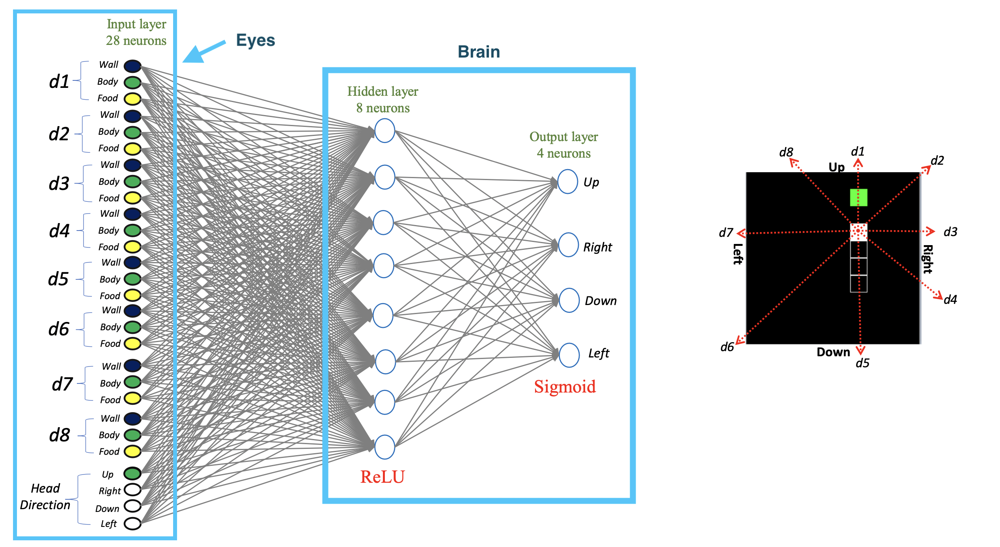
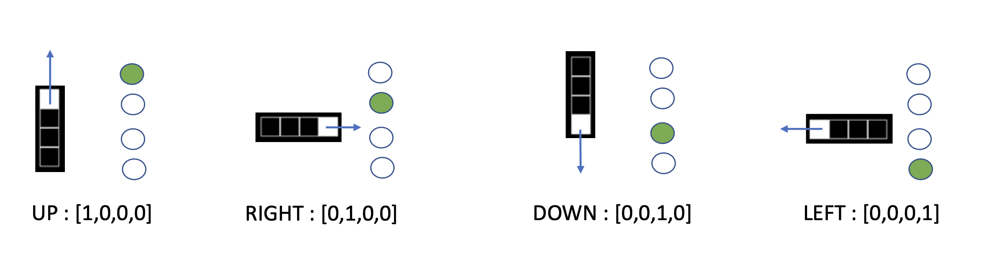
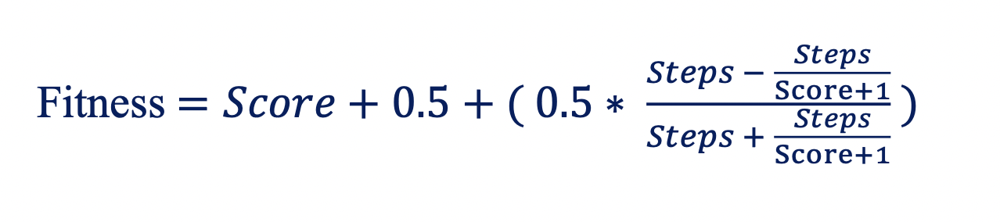
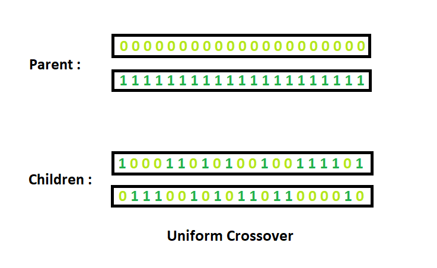

BackStory
This is a simple fun little project that I did almost a year ago, At that time I used to see a lot of CodeBullet’s videos and wanted to learn the gist behind these evolutionary algorithms, and I can’t get into my head if I don’t do it from scratch so I wanted to implement this project from scratch. At that time, I wanted to document the learning and the implementation process, I even thought of making a youtube video about this topic but could not complete it, at that time, I had made some video animations about this process but could not complete it because I started doing something else and when I can back it was already too much mess and could not complete the video animations, but I’ll include the video animations that I had made earlier.
Snake using Neural Network and Genetic Algorithm
This is a simple demonstration of how neural network can be used along with genetic algorithm to play snake game. Now when I say its a snake game, this is just basically learning how to optimize a function, just like what we do with gradient descent. But that’s the interesting part we’re not using Gradient Descent, no fancy optimizers, even the initial weights were initialized randomly, I now wish(at the time of writing this blog) that I had used some initialization techniques like Xavier initializations, it would have learned to play so much faster. But even the random initialization works. Let’s get to the point.
We are playing a snake game let’s imagine that has a brain, So the brain here are weights which we initialize using Feed-forward layer and then we use genetic algorithm to evolve that brain(weights) and use this brain(weights) to predict which move to take(up, down, left or right) at every step in the game. So the term Neural Network here only represents the feed-forward layer, we don’t use any of the backpropogation.
The whole code for this project can be found here: Github
Demo Video
Explanation
Following are the explanations that I’ve implemented for this project.
Snake’s Eye
It is what snake sees at each step while it’s playing game. Before performing anything, it has to see and pass it to the brain inorder to process what it has seen. So let’s understand what it sees at each step by looking at the video below.
Our snake sees in 8 different directions(d1 to d8) as shown in the figure above. And at each direction it sees 3 different things Wall, Food, Body(it’s own body)
Snake’s Brain
Now that we have our snake eyes let’s make the brain to process the things that it has seen. We use a simple two layer neural network. The first layer has 8 hidden layers and the second is output layer of 4 units. We only use the feed forward part of neural network and discard all the other backpropagation part. We will later use genetic algorithm to improve our weights.
The figure below contains two parts
- Snake’s eye(descibed above), and
- Snake’s brain

Input to neural network
Now that we now our snake sees a body, wall and food. Let’s assign values to these metrics.
Since the neural networks only understand numbers we represent them with a metric, 1 for favorable conditions and 0 for unfavorable.
Metric for body: One is given when no body is present in that direction and Zero is given when no blocks are present in between Head and Body.
$body = number of blocks between head and body/(total number of blocks - 1 )$.
Metric for Wall: One is given when the number of blocks between Head and Wall are maximum and Zero is given when no blocks are present in between Head and Wall.
$Wall = number of blocks between head and wall/(total number of blocks - 1 )$.
Metric for Food: It is good for snake to move in the direction of food, so One is given when no blocks are present in between Head and Food and Zero is given when no food is present in that direction.
$Food = ( total number of blocks - number of blocks between head and wall - 1)/(total number of blocks - 1 )$.
The another input to our snake is the it’s directions. It should keep. track of where it currently is to make move in another direction.
Value for Head Direction: This is a simple one-hot encoding for the direction.

Brain of Snake
The brain of our snake is the weights inside our hidden layers and output layers.
Our first hidden layer will have 8 * 28 weights with 8 bias. Our second layer will have 4 * 8 weights with 4 bias.
So, the total weights + bias counts to 268 which is the actual brain of our snake. So our neural network uses that brain to make a prediction in 4 directions. [Up, Right, Down, Left]
Genetic Algorithm
Since we do not use the backpropagation of our neural network to improve weights we will use use Genetic algorithm to improve weights.
Five phases are considered in a genetic algorithm. You should first read these steps below and then you can come back to the video below.
Initial brain (Population)
We randomly generate the brain of size (1,268). Remember this is the initial phase where we initialize our weigths (brain) for our snake which described above. Later, this shape (1,268) is flattened into the structure of our feed-forward neural network which is described above.
np.random.choice(np.arange(-1,1, step =0.001),size = (population_size,weight_size), replace= True)
weight size is 268 and population_size is the total number of snakes we want to train. I’ve trained 500 snakes in each generations. Thing to remember here is, each snake will have different brain. The random function above generates a linear vector which is later converted to matrices of sizes (8,28) for weights, (8,1) for bias and (4,8) for weights and (4,1) for bias using vector_to_matrix() function. The first two matrices is for hidden layer whereas the other two are for output layer.
Fitness function
Now that we have 500 different snakes in each generation. We have to differentiate the great Snake from weak. Snake’s fitness is based on its score and number of steps it taken to achieve that score, so we created a function by using Steps and Score as variables which will helps the Snake in getting maximum score in less steps. I’ve used the following fitness function that evaluates fitness of snakes relative to score and steps taken.

If two snakes have the same score then the snake that achieves the score in less number of steps is considered.
Selection
This process selects the best fit snakes from the entire population according to their fitness value described above. It is then used produce a new population of offspring which will be used in a next generation. I’ve selected top 50 snakes initially according to their fitness value. The selected snakes will be called parents.
Crossover
We take the parents selected from the selection process to produce a new set of offsprings. We take 50 parents and iterate over (population_size - parent_length) times and use uniform crossover method to produce new offspring from these parents. we later add our 50 parents to the population set. This process will preserve the best fit snakes, even if the crossover and mutation yield bad set of population. The unifrom crossover can be explained likewise.

Mutation
This example explains mutating by flipping bits.
1 0 1 0 0 1 0
↓
1 0 1 0 1 1 0
But in our case we change the value of our snake’s brain. Among 268 brain cells we will change 13 of them randomly between -0.5 to 0.5.
Running
We run the game through many generation(similar to epoch) to evolve our snake’s brain by applying the method explained above. We do it until the snake has learned to score desired number of points.